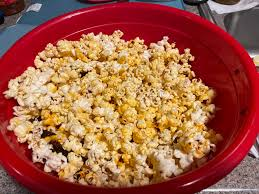

Pepcorn (aka spicy popcorn)

Make the best snack even better by adding a lil spice.
Pepcorn has easily become my go-to snack, especially now that we have a ONE POUND jar of Lao Gan Ma (thanks 99 Ranch).
Spicy, crunchy, easy. What more could you want?
Ingredients
- 1/2 cup popcorn kernels
- 3 tablespoons
Lao Gan Ma spicy chili crisp
- 2 tablespoons refined coconut oil
- 1 teaspoon salt
- 1 teaspoon garlic powder
- 1 teaspoon onion powder
- 2 teaspoons nutritional yeast
- 1/2 teaspoon red pepper flake
Steps
- Add salt, garlic powder, onion powder, nutrional yeast, and red pepper flake to spice grinder and grind until fine.
DO NOT REMOVE LID YET. Allow the spice dust to settle while you prepare the popcorn. Trust me. Your lungs will thank you.
-
Add coconut oil to
Whirley-pop along with popcorn kernels. Place on stove over medium heat, stirring continuously until popping subsides.
-
Pour popped corn into large bowl, add Lao Gan Ma, and mix until popcorn looks well coated.
-
Add spice mix and toss to coat.